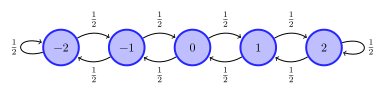
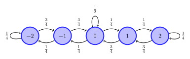

MDPs, Markov policies, dynamic programming, comparison principle, principle of irrelevant information
5.1 An example
To fix ideas, we start with an example.
Example 5.1 Consider a controlled Markov chain defined over \(\ALPHABET S = \{-2, -1, 0, 1, 2\}\) with two control actions, i.e., \(\ALPHABET A = \{0, 1\}\). If action \(A = 0\) is chosen, the chain evolves according to its “natural” dynamics, which are shown below:

Figure 5.1: “Natural” dynamics of the Markov chain
When action \(A = 1\) is chosen, the chain evolves according to the “forced” dynamics, which are shown below:

Figure 5.2: “Forced” dynamics of the Markov chain
Note that under the natural dynamics, the Markov chain will settle to a uniform steady-state distribution; under the forced dynamics, the Markov chain settle to a distribution which is unimodal with a peak at state \(0\).
Suppose it is desirable to keep the Markov chain close to state \(0\). We capture this by the system incurs a running cost equal to \(s^2\) in state \(s\). In addition, choosing action \(A=0\) is free but choosing action \(A=1\) has a correction cost\(p\).
Thus, the decision maker is in a conundrum. It may allow the system to follow its natural dynamics, which causes the system to reach states with larger absolute value and incur a running cost \(s^2\); or it may decide to force the system to drift towards state \(0\), which reduces the running cost but, in turn, incurs a correction cost \(p\). How should the decision maker choose its actions?
5.2 Basic model and structure of optimal policies
The type of model described above is called Markov decision processes (MDP), and they are the simplest model of a stochastic control system. There are two ways to model MDPs, which we describe below.
The first method to model MDPs is to think of them as a controlled Markov process; in particular, an MDP is a stochastic process \(\{S_t\}_{t \ge 1}\), \(S_t \in \ALPHABET S\), controlled by the process \(\{A_t\}_{t \ge 1}\), \(A_t \in \ALPHABET A\), which satisfies the controlled Markov property: \[
\PR(S_{t+1} = s_{t+1} \mid S_{1:t} = s_{1:t}, A_{1:t} = a_{1:t})
=
\PR(S_{t+1} = s_{t+1} \mid S_t = s_t, A_t = a_t).
\] For models with finite state and action spaces, the right-hand side of the above may be viewed as an element of the controlled transition matrix\(P_t(a_t)\). For instnace, in the example described at the beginning of this section, we have \[
\def\1{\tfrac 12}
P(0) = \MATRIX{ \1& \1& 0& 0& 0\\
\1& 0 & \1& 0& 0\\
0& \1& 0& \1& 0\\
0& 0& \1& 0& \1 \\
0& 0& 0& \1& \1}
\quad\text{and}\quad
\def\1{\tfrac 14}
\def\2{\tfrac 34}
\def\3{\tfrac 12}
P(1) = \MATRIX{ \1& \2& 0& 0& 0\\
\1& 0 & \2& 0& 0\\
0& \1& \3& \1& 0\\
0& 0& \2& 0& \1 \\
0& 0& 0& \2& \1}
\] Since the model is time-homogeneous, we have replaced \(P_t(a)\) by just \(P(a)\).
This representation is compact and convenient for computational purposes, but I personally feel that it can be a bit opaque for proving the fundamental results of MDP theory. For that reason, I prefer to start with the second representation, which is desibed below.
In the second representation, the dynamic behavior of an MDP is modeled by an equation \[ \begin{equation}
S_{t+1} = f_t(S_t, A_t, W_t) \label{eq:state}
\end{equation}\] where \(S_t \in \ALPHABET S\) is the state, \(A_t \in \ALPHABET A\) is the control input, and \(W_t \in \ALPHABET W\) is the noise. An agent/controller observes the state and chooses the control input \(A_t\).
We call this the functional representation of the MDP. Eq. \eqref{eq:state} is a non-linearstochastic state-space model—non-linear because \(f_t\) can be any nonlinear function; stochastic because the system is driven by stochastic noise \(\{W_t\}_{t \ge 1}\).
Note that the controlled Markov chain representation can be easily translated to a functional representation by taking \(W_t\) to be a uniform \([0,1]\) random variable and using a differnet :Smirnov transformation for each state action pair \((S_t, A_t)\).
At each time, the system incurs a cost that may depend on the current state and control action. This cost is denoted by \(c_t(S_t, A_t)\). The system operates for a time horizon \(T\). During this time, it incurs a total cost \[ \sum_{t=1}^T c_t(S_t, A_t). \]
The initial state \(S_1\) and the noise process \(\{W_t\}_{t \ge 1}\) are random variables defined on a common probability space (these are called primitive random variables) and are mutually independent. This seemingly benign assumption is critical for the theory that we present to go through.
Suppose we have to design such a controller. We are told the probability distribution of the initial state and the noise. We are also told the system update functions \((f_1, \dots, f_T)\) and the cost functions \((c_1, \dots, c_T)\).
Our objective to determine a control policy, i.e., a function for choosing the control actions. The control policy can be as sophisticated as we want. In principle, it can analyze the entire history of observations and control actions to choose the current control action. Thus, the control action can be written as \[ A_t = π_t(S_{1:t}, A_{1:t-1}),\] where \(S_{1:t}\) is a shorthand for \((S_1, \dots, S_t)\) and a similar interpretation holds for \(A_{1:t-1})\). The function \(π_t\) is called the control law at time \(t\).
We want to choose a control policy\(π = (π_1, \dots, π_T)\) to minimize the expected total cost \[ J(π) := \EXP\bigg[ \sum_{t=1}^T c_t(S_t, A_t) \bigg]. \] How should we proceed?
At first glance, the problem looks intimidating. It appears that we have to design a very sophisticated controller: one that analyzes all past data to choose a control input. However, this is not the case. A remarkable result is that the optimal controller can discard all past data and choose the control input based only on the current state of the system. Formally, we have the following:
Theorem 5.1 (Optimality of Markov policies) For the system model described above, there is no loss of optimality in choosing the control action according to \[ A_t = π_t(S_t), \quad t=1, \dots, T.\] Such a control policy is called a Markov policy.
In the context of the example presented at the beginning of this section, Theorem 5.1 says that the decision maker can decide whether to choose action \(0\) or \(1\) based on the current state, without any loss of optimality.
In general, Theorem 5.1 claims that the cost incurred by the best Markov policy is the same as the cost incurred by the best history dependent policy. This appears to be a tall claim, so lets see how we can prove it. The main idea of the proof is to repeatedly apply Blackwell’s principle of irrelevant information(Blackwell 1964)
Lemma 5.1 (Two-Step Lemma) Consider an MDP that operates for two steps (\(T=2\)). Then there is no loss of optimality in restricting attention to a Markov control policy at time \(t=2\).
Note that \(π_1\) is Markov because it can only depend \(S_1\).
Proof
Fix \(π_1\) and look at the problem of optimizing \(π_2\). The total cost is \[ \EXP[ c_1(S_1, π_1(S_1)) + c_2(S_2, π_2(S_{1:2}, A_1)) ]\] The choice of \(π_2\) does not influence the first term. So, for a fixed \(π_1\), minimizing the total cost is the equivalent to minimizing the second term. Now, from Blackwell’s principle of irrelevant information, there exists a \(π_2^* \colon S_2 \mapsto A_2\) such that for any \(π_2\)\[\EXP[c_2(S_2, π_2^*(S_2) ] \le \EXP[c_2(S_2, π_2(S_{1:2}, A_2) ].\]
Lemma 5.2 (Three-Step Lemma) Consider an MDP that operates for three steps (\(T=3\)). Assume that the control law \(π_3\) at time \(t=3\) is Markov, i.e., \(A_3 = π_3(S_3)\). Then, there is no loss of optimality in restricting attention to Markov control law at time \(t=2\).
Proof
Fix \(π_1\) and \(π_3\) and look at optimizing \(π_2\). The total cost is \[ \EXP[ c_1(S_1, π_1(S_1)) + c_2(S_2, π_2(S_{1:2}, A_1)) + c_3(S_3, π_3(S_3)].\]
The choice of \(π_2\) does not affect the first term. So, for a fixed \(π_1\) and \(π_3\), minimizing the total cost is the same as minimizing the last two terms. Let us look at the last term carefully. Bu the law of iterated expectations, we have \[ \EXP[ c_3(S_3, π_3(S_3) ] = \EXP[ \EXP[ c_3(S_3, π_3(S_3)) | S_2, A_2 ] ]. \] Now, \[\begin{align*}
\EXP[ c_3(S_3, π_3(S_3)) | S_2 = s_2, A_2 = a_2 ] &=
\sum_{s_3 \in \ALPHABET S} c_3(s_3, π_3(s_3)) \\
&= \PR( w_2 \in \ALPHABET W : f_2(s_2, a_2, w_2) = s_3 )
\\
&=: h_2(s_2, a_2).
\end{align*}\] The key point is that \(h_2(s_2, a_2)\) does not depend on \(π_1\) or \(π_2\).
Thus, the total expected cost affected by the choice of \(π_2\) can be written as \[\begin{align*}
\EXP[ c_2(S_2, A_2) + c_3(S_3, A_3) ] &= \EXP[ c_2(S_2, A_2) + h_2(S_2, A_2)
] \\
&=: \EXP[ \tilde c_2(S_2, A_2) ].
\end{align*}\] Now, by Blackwell’s principle of irrelevant information, there exists a \(π_2^* : S_2 \mapsto A_2\) such that for any \(π_2\), we have \[ \EXP[ \tilde c_2(S_2, π_2^*(S_2))] \le \EXP[ \tilde c_2(S_2, π_2(S_{1:2},
A_1) ].\]
Now we have enough background to present the proof of optimality of Markov policies.
The main idea is that any system can be thought of as a two- or three-step system by aggregating time. Suppose that the system operates for \(T\) steps. It can be thought of as a two-step system where \(t \in \{1, \dots, T - 1\}\) corresponds to step 1 and \(t = T\) corresponds to step 2. From the two-step lemma, there is no loss of optimality in restricting attention to Markov control law at step 2 (i.e., at time \(t=T\)), i.e., \[ A_T = π_T(S_T). \]
Now consider a system where we are using a Markov policy at time \(t=T\). This system can be thought of as a three-step system where \(t \in \{1, \dots,
T-2\}\) corresponds to step 1, \(t = T-1\) corresponds to step 2, and \(t=T\) corresponds to step 3. Since the controller at time \(T\) is Markov, the assumption of the three step lemma is satisfied. Thus, by that lemma, there is no loss of optimality in restricting attention to Markov controllers at step 2 (i.e., at time \(t=T-1\)), i.e., \[A_{T-1} = π_{T-1}(S_{T-1}).\]
Now consider a system where we are using a Markov policy at time \(t \in
\{T-1, T\}\). This can be thought of as a three-step system where \(t \in \{1,
\dots, T - 3\}\) correspond to step 1, \(t = T-2\) correspond to step 2, and \(t
\in \{T-1, T\}\) correspond to step 3. Since the controllers at time \(t \in
\{T-1, T\}\) are Markov, the assumption of the three-step lemma is satisfied. Thus, by that lemma, there is no loss of optimality in restricting attention to Markov controllers at step 2 (i.e., at time \(t=T-2\)), i.e., \[A_{T-2} = π_{T-2}(S_{T-2}).\]
Proceeding this way, we continue to think of the system as a three step system by different relabeling of time. Once we have shown that the controllers at times \(t \in \{s+1, s+2, \dots, T\}\) are Markov, we relabel time as follows: \(t=\{1, \dots, s-1\}\) corresponds to step 1, \(t = s\) corresponds to step 2, and \(t \in \{s+1, \dots, T\}\) corresponds to step 3. Since the controllers at time \(t \in \{s+1, \dots, T\}\) are Markov, the assumption of the three-step lemma is satisfied. Thus, by that lemma, there is no loss of optimality in restricting attention to Markov controllers at stage 2 (i.e. at time \(s\)), i.e., \[A_τ = π_τ(S_τ).\]
Proceeding until \(s=2\), completes the proof.
5.3 Performance of Markov policies
We have shown that there is no loss of optimality to restrict attention to Markov policies. One of the advantages of Markov policies is that their performance can be computed recursively. In particular, given any Markov policy \(π = (π_1, \dots, π_T)\), define the cost-to-go functions or value function as follows: \[V^{π}_t(s) = \EXP^π \bigg[ \sum_{τ = t}^{T} c_τ(S_τ, π_τ(S_τ)) \biggm| S_t =
s\bigg]. \] Note that \(V^{π}_t(s)\) only depends on the future policy \((π_t, \dots, π_T)\). These functions can be computed recursively as follows: we start with a terminal value function \(V^{π}_{T+1}(s) ≡ 0\) and then for \(t \in \{T, T-1, \dots, 1\}\), recursively compute: \[\begin{align}
V^{π}_t(s) &= \EXP^π \bigg[ \sum_{τ = t}^{T} c_τ(S_τ, π_τ(S_τ)) \biggm| S_t =
s \bigg] \notag \\
&= \EXP^π \bigg[ c_t(s, π_t(s)) + \EXP^π \bigg[ \sum_{τ = t+1}^T
c_τ(S_τ, π_τ(S_τ)) \biggm| S_{t+1} \bigg] \biggm| S_t = s \bigg]
\notag \\
&= \EXP^π\big[ c_t(s, π_t(s)) + V^{π}_{t+1}(S_{t+1}; π) \big| S_t = s \big]. \label{eq:finite-policy-evaluation}
\end{align}\]
The formula of Eq. \(\eqref{eq:finite-policy-evaluation}\) is called the policy evaluation formula.
For the controlled Markov chain representation, the formula can be written in a vector form. In particular, we will think of \(V^π_t\) to be a vector in \(\reals^n\), where \(n = \ABS{\ALPHABET S}\). For any policy \(π = (π_1, \dots, π_T)\), define the \(n × n\) transition matrices \((P^{π}_1, \dots, P^{π}_T)\) as \[
P^{π}_t(s'|s) = P_t(s'|s, π_t(s)),
\quad t \in \{1,\dots, T\}.
\] Furthermore, define \(n\) dimensional cost vectors \((c^{π}_1, \dots, c^{π}_T)\) as \[
c^π_t(s) = c_t(s, π_t(s)),
\quad t \in \{1,\dots, T\}.
\] Then, the policy evaluation formula \(\eqref{eq:finite-policy-evaluation}\) is equivalent to the following: start with a terminal value function \(V^π_{T+1} ≡ 0\) and then for \(t \in \{T, T-1,\dots, 1\}\), recursively compute: \[
V^{π}_t = c^{π}_t + P^{π}_t V^{π}_{t+1}.
\]
As an example, consider the following time-homogeneous policy Example 5.1: \[
π_t(s) = \begin{cases}
1 & \text{if } |s| = 2 \\
0 & \text{otherwise}
\end{cases}
\] Suppose \(p = 1\), i.e., \(c(s,a) = s^2 + a\). We now compute the value function \(\{V^{π}_t\}_{t=1}^T\) for \(T = 5\).
For this policy \[
c^{π} = \MATRIX{ 5 \\ 1 \\ 0 \\ 1 \\ 5 }
\quad\text{and}\quad
\def\1{\tfrac 14}
\def\2{\tfrac 34}
\def\3{\tfrac 12}
P^π = \MATRIX{ \1& \2& 0& 0& 0\\
\3& 0 & \3& 0& 0\\
0& \3& 0& \3& 0\\
0& 0& \3& 0& \3 \\
0& 0& 0& \2& \1}
\] We start with \(V^π_{t+1} = \VEC(0,0,0,0,0)\) and run the following recursion.
cπ = [5, 1, 0, 1, 5] Pπ = [1//43//40001//201//20001//201//20001//201//20003//41//4]T =5n =size(cπ,1)Vπ = [ zeros(n) for t ∈1:T+1 ]for t ∈ T:-1:1 Vπ[t] = cπ + Pπ*Vπ[t+1]enddisplay(Vπ)
Figure 5.3 shows the value functions computed as part of the policy evaluation.
Figure 5.3: Value function for policy evaluation of Example 5.1. Note that the value functions are computed by proceeding backwards in time.
5.4 Dynamic Programming Decomposition
Now we are ready to state the main result for MDPs.
Theorem 5.2 (Dynamic program) Recursive define value functions\(\{V^*_t\}_{t = 1}^{T+1} \colon \ALPHABET S
\to \reals\) as follows: \[ \begin{equation} \label{eq:DP-1}
V^*_{T+1}(s) = 0
\end{equation} \] and for \(t \in \{T, \dots, 1\}\): \[\begin{align}
Q^*_t(s,a) &= c(s,a) + \EXP[ V^*_{t+1}(S_{t+1}) | S_t = s, A_t = a]
\nonumber \\
&= c(s,a) + \EXP[ V^*_{t+1}(f_t(s,a,W_t)) ], \label{eq:DP-2}
\end{align}\] and define \[ \begin{equation} \label{eq:DP-3}
V^*_t(s) = \min_{a \in \ALPHABET A} Q^*_t(s,a).
\end{equation} \] Then, a Markov policy is optimal if and only if it satisfies \[ \begin{equation} \label{eq:verification}
π_t^*(s) = \arg \min_{a \in \ALPHABET A} Q_t(s,a).
\end{equation} \]
For the controlled Markov chain representation, the dynamic program of Theorem 5.2 can be written more succinctly. We will view \(\{V^*_t\}_{t=1}^T\) as vectors in \(\reals^n\), where \(n = \ABS{\ALPHABET S}\). Moreover, we will view \(\{Q^*_t\}_{t=1}^T\) and \(\{c_t\}_{t=1}^T\) as matrices in \(\reals^{n × m}\), where \(m = \ABS{\ALPHABET A}\).
Then, the dynamic program of Theorem 5.2 may be written as follows: start with a terminal value function \(V^*_{T+1} ≡ 0\) and then for \(t \in \{T, T-1, \dots, 1\}\), recursively compute: \[\begin{align*}
Q^*_t &= c_t + [ P_t(1) V^*_{t+1} \mid P_t(2) V^*_{t+1} \mid \cdots \mid P_t(m) V^*_{t+1} ], \\
V^*_t &= \min(Q^*_t, \hbox{\tt dim}=2), \\
π^*_t &= \arg\min(Q^*_t, \hbox{\tt dim}=2).
\end{align*}\]
Now we present the dynamic programming solution for Example 5.1:
# We use the default indexing (1,...,n) for convenience. (n,m) = (5,2)S =1:nA =1:mT =5P = [ zeros(n,n) for a ∈ A ]P[1] = [1//21//20001//201//20001//201//20001//201//20001//21//2]P[2] = [1//43//40001//403//40001//41//21//40003//401//40003//41//4]c =zeros(n,m)for s ∈ S, a ∈ A# use s-3 and a-1 to convert to "natural" indices -2:2 and 0:1 c[s,a] = (s-3)^2+ (a-1)endV = [ zeros(n) for t ∈1:T+1 ]π= [ zeros(Int,n) for t ∈1:T ]for t ∈ T:-1:1 Q = c +hcat(P[1]*V[t+1], P[2]*V[t+1])# Could be done more efficiently with a single pass V[t] =vec(minimum(Q, dims=2))# Subtract 1 to get to "natural" indices 0:1π[t] =argmin.(eachrow(Q)) .-1enddisplay(V)display(π)
Figure 5.4 shows the value functions and optimal policy computed from the dynamic program
Figure 5.4: Optimal value function and optimal policy for Example 5.1. The red color indicates that the optimal action is \(1\); black indicates that the optimal action is \(0\). Note that the computations are done by proceeding backwards in time.
5.4.2 Back to the proof
Instead of proving Theorem 5.2, we prove a related result.
Theorem 5.3 (The comparison principle) For any Markov policy \(π\)\[ V^{π}_t(s) \ge V_t(s) \] with equality at \(t\) if and only if the future policy\(π_{t:T}\) satisfies the verification step \eqref{eq:verification}.
Note that the comparison principle immediately implies that the policy obtained using dynamic programming is optimal.
The comparison principle also allows us to interpret the value functions. The value function at time \(t\) is the minimum of all the cost-to-go functions over all future policies. The comparison principle also allows us to interpret the optimal policy (the interpretation is due to Bellman and is colloquially called Bellman’s principle of optimality).
Bellman’s principle of optimality.
An optimal policy has the property that whatever the initial state and the initial decisions are, the remaining decisions must constitute an optimal policy with regard to the state resulting from the first decision.
Proof of the comparison principle
The proof proceeds by backward induction. Consider any Markov policy \(π =
(π_1, \dots, π_T)\). For \(t = T\), \[ \begin{align*}
V_T(s) &= \min_{a \in \ALPHABET A} Q_T(s,a) \\
&\stackrel{(a)}= \min_{a \in \ALPHABET A} c_T(s,a) \\
&\stackrel{(b)}\le c_T(s, π_T(s)) \\
&\stackrel{(c)}= V^{π}_T(s),
\end{align*} \] where \((a)\) follows from the definition of \(Q_T\), \((b)\) follows from the definition of minimization, and \((c)\) follows from the definition of \(J_T\). Equality holds in \((b)\) iff the policy \(π_T\) is optimal. This result forms the basis of induction.
Now assume that the statement of the theorem is true for \(t+1\). Then, for \(t\)\[ \begin{align*}
V_t(s) &= \min_{a \in \ALPHABET A} Q_t(s,a) \\
&\stackrel{(a)}= \min_{a \in \ALPHABET A} \Big\{
c_t(s,a) + \EXP[ V_{t+1}(S_{t+1}) | S_t = s, A_t = a]
\Big\}
\\
&\stackrel{(b)}\le \Big\{
c_t(s,π_t(s)) + \EXP[ V_{t+1}(S_{t+1}) | S_t = s, A_t = π_t(s)]
\Big\} \\
&\stackrel{(c)}\le \Big\{
c_t(s,π_t(s)) + \EXP[ J_{t+1}(S_{t+1}; π) | S_t = s, A_t = π_t(s)]
\Big\} \\
&\stackrel{(d)}= V^{π}_t(s),
\end{align*} \] where \((a)\) follows from the definition of \(Q_t\), \((b)\) follows from the definition of minimization, \((c)\) follows from the induction hypothesis, and \((d)\) follows from the definition of \(J_t\). We have equality in step \((b)\) iff \(π_t\) satisfies the verification step \eqref{eq:verification} and have equality in step \((c)\) iff \(π_{t+1:T}\) is optimal (this is part of the induction hypothesis). Thus, the result is true for time \(t\) and, by the principle of induction, is true for all time.
5.5 More examples
5.5.1 Machine replacement
Example 5.2 (Machine replacement) Consider a manufacturing process, where the machine used for manufacturing deteriorates over time. Let \(\ALPHABET S = \{0, 1, \dots n \}\) represent the condition of the machine. The higher the value of \(s\), the worse the condition of the equipment.
A decision maker observes the state of the machine and has two options: continue operating the machine or replace it with a a new and identical piece of equipment. Operating the machine is state \(s\) costs \(h(s)\), where \(h(⋅)\) is a weakly increasing function; replace the machine costs a constant amount \(K\).
When the machine is operated, it’s state deteriorates according to \[
S_{t+1} = \min( S_t + W_t , n)
\] where \(\{W_t\}_{t \ge 1}\) is an i.i.d. process with PMF \(μ\).
The above system may be modelled as an MDP with state space \(\ALPHABET S\) and action space \(\ALPHABET A = \{0, 1\}\) where \(0\) means operating the machine and \(1\) means replacing the machine.
For instance, consider \(n = 5\) and \(W \sim \text{Bernoulli}(p)\). The evolution of the Markov chain under action \(A_t = 0\) and \(A_t = 1\) are shown in Figure 8.1.
Dynamics under action \(A_t = 0\)
Dynamics under action \(A_t = 1\)
Figure 5.5: State dynamics for the MDP of Example 5.2
The per-step cost is given by \[
c(s,a) = h(s) + λa.
\]
Solving the DP for \(p=0.2\), \(λ=10\), and \(T=5\) gives the following:
Show code
usingSparseArrays# We use the default indexing (1,...,n) for convenience. (n,m) = (6,2)S =1:nA =1:mT =5λ =10p =0.2q =1-pP = [ spzeros(n,n) for a ∈ A ]for i in S P[1][i,i] = q P[1][i,min(i+1,n)] += p P[2][i,1] =1endc =zeros(n,m)for s ∈ S, a ∈ A# use s-1 and a-1 to convert to "natural" indices 0:5 and 0:1 c[s,a] =2(s-1) +λ*(a-1)endV = [ zeros(n) for t ∈1:T+1 ]π= [ zeros(Int,n) for t ∈1:T ]for t ∈ T:-1:1 Q = c +hcat(P[1]*V[t+1], P[2]*V[t+1])# Could be done more efficiently with a single pass V[t] =vec(minimum(Q, dims=2))# Subtract 1 to get to "natural" indices 0:1π[t] =argmin.(eachrow(Q)) .-1enddisplay(V)display(π)
Figure 5.6 shows the optimal value function and optimal policy as a function of time.
Figure 5.6: Optimal value function and optimal policy for Example 5.2. The red color indicates that the optimal action is \(1\); black indicates that the optimal action is \(0\). Note that the computations are done by proceeding backwards in time.
5.6 Variations of a theme
5.6.1 Cost depends on next state
In the basic model that we have considered above, we assumed that the per-step cost depends only on the current state and current actions. In some applications, such as the inventory management, it is more natural to have a cost function where the cost depends on the current state, current action, and the next state. Conceptually, such problems can be treated in the same way as the standard model.
In particular, suppose we have a per-step cost given by \(c_t(S_t,A_t,S_{t+1})\), where the objective is to minimize \[ J(π) = \EXP\Bigl[ \sum_{t=1}^T c_t(S_t, A_t, S_{t+1}) \Bigr]. \]
Define \[ \tilde c_t(s, a) = \EXP[ c_t(s, a, S_{t+1}) | S_t = s, A_t = a ]
= \EXP[ c_t(s,a, f_t(s,a, W_t) ]. \] Then, by the towering property of conditional expectation, we can write
Thus, we can equivalently consider this as our standard model with the per-step cost given by \(\tilde c_t(S_t, A_t)\). We can write the recursive step of the dynamic program as follows: \[ Q^*_t(s,a) = \EXP[ c_t(s,a, S_{t+1}) + V^*_{t+1}(S_{t+1}) | S_t = s, A_t = a ].\]
For numerically solving the dynamic program when the cost is time-homogeneous (i.e., does not depend on \(t\)), it is more efficient to compute \(\tilde c\) once and recuse that in the dynamic program recursion.
5.6.2 Discounted cost
In some applications, it is common to consider a discounted expected cost given by \[ J(π) = \EXP\Bigl[ \sum_{t=1}^T γ^{t-1} c_t(S_t, A_t) \Bigr] \] where \(γ \in (0,1)\) is called the discount factor.
Discount Factor
The idea of using discounting in MDPs is due to Blackwell (1965).
There are two interpretations of the discount factor \(γ\). The first interpretation is an economic interpretation to determine the present value of a utility that will be received in the future. For example, suppose a decision maker is indifferent between receiving 1 dollar today or \(s\) dollars tomorrow. This means that the decision maker discounts the future at a rate \(1/s\), so \(γ = 1/s\).
The second interpretation is that of an absorbing state. Suppose we are operating a machine that generates a value of $1 each day. However, there is a probability \(p\) that the machine will break down at the end of the day. Thus, the expected return for today is $1 while the expected return for tomorrow is \((1-p)\) (which is the probability that the machine is still working tomorrow). In this case, the discount factor is defined as \((1-p)\). See Shwartz (2001) for a detailed discussion of this alternative.
The recursive step of the dynamic program for such models can be written as \[ Q^*_t(s,a) = c_t(s,a) + γ \, \EXP[ V^*_{t+1}( S_{t+1}) | S_t = s, A_t = a ].\]
5.6.3 Multiplicative cost
So far, we have assumed that the cost is additive. The dynamic proramming decomposition also works for models with multiplicative cost. In particular, suppose that the performance of any policy is given by \[ J(π) = \EXP\Bigl[ \prod_{t=1}^T c_t(S_t, A_t) \Bigr] \] where the per-step cost function is positive. Then, it can be shown that the optimal policy is given by the following dynamic program.
Proposition 5.1 (Dynamic Program for multiplicative cost) Initialize \(V_{T+1}(s) = 1\) and recursively compute \[ \begin{align*}
Q^*_t(s,a) &= c_t(s,a) \EXP[ V^*_{t+1}(S_{t+1}) | S_t = s, A_t = a ], \\
V^*_t(s) &= \min_{a \in \ALPHABET A} Q^*_t(s,a).
\end{align*} \]
5.6.4 Exponential cost function
A special class of multiplicative cost function is exponential of sum: \[J(π) = \EXP\Bigl[ \exp\Bigl( \theta \sum_{t=1}^T c_t(S_t, A_t) \Bigr) \Bigr]. \]
When \(\theta > 0\), the above captures risk-averse preferences and when \(\theta < 0\), it corresponds to risk-seeking preferences. This is equivalent to a multiplicative cost \[J(π) = \EXP\Bigl[ \prod_{t=1}^T \exp( \theta c_t(S_t, A_t)) \Bigr]. \] Therefore, the dynamic program for multiplicative cost is also applicable for this model.
Let \(\{S_t\}_{t \ge 1}\) be a Markov chain. At each time \(t\), a decision maker observes the state \(S_t\) of the Markov chain and decides whether to continue or stop the process. If the decision maker decides to continue, he incurs a continuation cost\(c_t(S_t)\) and the state evolves. If the DM decides to stop, he incurs a stopping cost of \(d_t(S_t)\) and the problem is terminated. The objective is to determine an optimal stopping time\(\tau\) to minimize \[J(\tau) := \EXP\bigg[ \sum_{t=1}^{\tau-1} c_t(S_t) + d_\tau(S_\tau)
\bigg].\]
Such problems are called Optimal stopping problems.
Define the cost-to-go function of any stopping rule as \[V^{\tau}_t(s) = \EXP\bigg[ \sum_{τ = t}^{\tau - 1} c_{\tau}(S_t) +
d_\tau(S_\tau) \,\bigg|\, \tau > t \bigg]\] and the value function as \[V^*_t(s) = \inf_{\tau} V^{\tau}_t(s). \] Then, it can be shown that the value functions satisfy the following recursion:
The fundamental ideas discussed above also hold for continuous state and action spaces provided one carefully deals with measurability. We first fix some notation:
For a set \(\ALPHABET S\), let \(\mathscr B(\ALPHABET S)\) denote the Borel sigma-algebra on \(\ALPHABET S\).
We use \(\ALPHABET M(\ALPHABET X, \ALPHABET Y)\) to denote the set of measurable functions from the space \(\ALPHABET X\) to the space \(\ALPHABET Y\) (we implicitly assume that the sigma-algebras on \(\ALPHABET X\) and \(\ALPHABET Y\) is the respective Borel sigma-algebras). When \(\ALPHABET Y\) is \(\reals\), we will sometimes use the notation \(\ALPHABET M(\ALPHABET X)\).
In order to talk about expected cost, in continuous state spaces we have to assume that the per-step cost is measurable, i.e., \(c \in \ALPHABET M(\ALPHABET S × \ALPHABET A)\), and the \(P \colon \ALPHABET S × \ALPHABET A × \mathscr B(\ALPHABET S) \to [0,1]\) is a stochastic kernel, i.e., for every \((s,a) \in \ALPHABET S × \ALPHABET A\), \(p(s,a,\cdot)\) is probability measure on \(\ALPHABET S\), and for every \(B \in \ALPHABET S\), the function \(p(\cdot, \cdot, B) \in \ALPHABET M(\ALPHABET S × \ALPHABET A)\). These assumption imply that for every measurable policy \(π \in \ALPHABET M(\ALPHABET S, \ALPHABET A)\), the performance \(J(\pi)\) is well defined. However, these assumptions are not sufficient to establish the optimality of dynamic programmming.
To highlight the technical issues, let us consider an MDP with \(T = 1\), i.e., a stochastic optimization problem. Define \[
V^*(s) = \inf_{a \in \ALPHABET A} c(s,a)
\quad\text{and}\quad
π^*(s) = \arg\inf_{a \in \ALPHABET A} c(s,a).
\]
We present a few examples below from Blackwell (1965) to highlight technical issues with non-finite state models.
Example 5.3 (No optimal policy) Let \(\ALPHABET S = \{s_\circ\}\), \(\ALPHABET A = \integers_{\ge 0}\) Consider \(c(s_\circ,a) = (a+1)/a\). Here \(v^*(s_\circ) = 1\) but there is no policy which achieves this cost.
In the above example, there is no optimal policy, but given any \(ε > 0\), we can identify an \(ε\)-optimal policy. The next example shows that we can have a much severe situation where the value function is not measurable. The example relies on the following fact:
Example 5.4 (Non-measurable value function) Let \(\ALPHABET S = \ALPHABET A = [0,1]\) and let \(B \subset \ALPHABET S × \ALPHABET A\) such that \(B\) is measurable but its projection on \(D\) onto \(\ALPHABET S\) is not. Consider \(c(s,a) = -\IND\{ (s,a) \in B \}\). Note that \[
v(s) = \inf_{a \in \ALPHABET A} c(s,a) =
\inf_{a \in \ALPHABET A} -\IND\{ (s,a) \in B \} =
-\IND\{s \in D \}
\] which is not Borel measurable.
See Piunovskiy (2011) for various examples on what can go wrong in MDPs. In particular, Example 1.4.15 of Piunovskiy (2011) extends Example 5.4 to provide an example where there is no \(ε\)-optimal policy! (Blackwell (1965) also has such an example, but it is much harder to parse).
There are two ways to resolve the issue with non-existence of optimal policies: either assume that \(\ALPHABET A\) is compact or that the function that we are minimizing is coercive, so that the \(\arg\inf\) can be replaced by an \(\arg\min\). Or work with \(ε\)-optimal policies.
Resolving the measurability issue is more complicated. There are various measurable selection theorems in the literature to identify sufficient conditions for measurability of the value function and optimal policy. See Hernández-Lerma and Lasserre (1996) and (1999) for an accessible treatment of continous state MDPs.
Exercises
Exercise 5.1 (Monotonicity in time) Consider an MDP where the dynamics and per-step cost are time-homogeneous, i.e., the function \(f_t\) and the per-step cost \(c_t\) do not depend on \(t\) (except, possibly at the terminal time \(t=T\)). Suppose that \(V^*_{T-1}(s) \le V^*_T(s)\) for all \(s \in \ALPHABET S\). Then, show that \[ V^*_{t}(s) \le V^*_{t+1}(s), \quad
\text{for all $s \in \ALPHABET S$ and $t$}.\]
Similarly, if we have that \(V^*_{T-1}(s) \ge V^*_T(s)\) for all \(s \in
\ALPHABET S\), then \[ V^*_{t}(s) \ge V^*_{t+1}(s), \quad
\text{for all $s \in \ALPHABET S$ and $t$}.\]
Exercise 5.2 (Dynamic programming for maximizing tail probabilities) Consider a dynamical system that evolves as follows: \[
S_{t+1} = f_t(S_t, A_t, W_t)
\] where \(\{S_1, W_1, \dots, W_T\}\) are independent random variables and the control actions \(A_t\) are chosen according to a history dependent policy \(π = (π_1, \dots, π_T)\): \[
A_t = π_t(S_{1:t}, A_{1:t-1}).
\] Given a sequence of functions \(h_t \colon \ALPHABET S \mapsto \reals\), the cost of a policy \(π\) is given by the probability that \(h_t(S_t)\) exceeds a given threshold \(α \in \reals\) at some time, i.e., \[
J(π) = \PR^{π}\left( \max_{0 \le t \le T} h_t(S_t) \ge α \right).
\]
Show that the above cost can be put in an additive form that would enable us to use the theory developed in the class to tackle this setup.
Exercise 5.3 (Optimal strategy in internet of things) Consider an IoT (Internet of Things) device which is observing an autoregressive process \(\{X_t\}_{t \ge 0}\), \(X_t \in \integers\), which starts at \(X_1 = 0\) and for \(t > 1\) evolves as \[ X_{t+1} = X_t + W_t \] where \(\{W_t\}_{t \ge 1}\) is an i.i.d. process with \(W_t \in \{ -5, \dots,
5 \}\) with \[ \PR(W_t = w) =
\begin{cases}
\frac{1}{5} - \frac{|w|}{25}, & \text{if } |w| \le 5 \\
0, & \text{otherwise}
\end{cases}\]
The IoT device can either transmit its observation (denoted by \(A_t = 1\)) or not (denoted by \(A_t = 0\)). Transmitting a packet has a cost \(\lambda\) while not transmitting has no cost.
When \(A_t = 0\), the receiver estimates the state of the process as the previously transmitted observation \(Z_t\) and incurs a cost \((X_t -
Z_t)^2\).
The above system can be modeled as an MDP with state \(\{S_t \}_{t \ge 0}\), where \(S_t = X_t - Z_t\). It can be shown that the dynamics of \(\{S_t\}_{t
\ge 1}\) are as follows: \[ S_{t+1} = \begin{cases}
S_t + W_t, & \text{if } A_t = 0 \\
W_t, & \text{if } A_t = 1
\end{cases} \]
The per-step cost is given by \[ c(s,a) = \lambda a + (1-a)s^2. \]
The objective of this exercise is to find the optimal policy for the above problem using dynamic programming.
In this model, the state space is unbounded which makes it difficult to use dynamic programming. So, we construct approximate dynamics as follows. We pick a large number \(B\) and assume that the dynamics are: \[ S_{t+1} = \begin{cases}
[S_t + W_t]_{-B}^B, & \text{if } A_t = 0 \\
[W_t]_{-B}^B, & \text{if } A_t = 1
\end{cases} \]
So, we can effective consider the state space to be \(\{-B, \dots, B\}\).
Solve the dynamic program for \(T = 20\), \(λ = 100\), and \(B = 100\).
Plot the value function for \(t \in \{1, 5, 10, 19 \}\) on the same plot.
Plot the optimal policy for \(t \in \{1, 5, 10, 19 \}\).
Change the value of \(B\) in the set \(\{50, 60, 70, 80 \}\) to make sure that our truncation does not have a significant impact on the value function and the optimal policy.
Exercise 5.4 Consider the model of Example 5.2 where \(W \sim \text{Binon}(n,p)\).
Solve the dynamic program for \(T=20\), \(n=10\), \(p=0.4\), \(h(s) = 2s\), and \(λ=10\).
Plot the value function for \(t \in \{1, 5, 10, 19 \}\) on the same plot.
Plot the optimal policy for \(t \in \{1, 5, 10, 19 \}\).
Based on these results, guess the structure of the optimal policy. Change the values of the parameters to check if the structure is retained. We will learn how to establish that such a structure is optimal in Exercise 8.5.
Notes
The proof idea for the optimality of Markov policies is based on a proof by Witsenhausen (1979) on the structure of optimal coding policies for real-time communication. Note that the proof does not require us to find a dynamic programming decomposition of the problem. This is in contrast with the standard textbook proof where the optimality of Markov policies is proved as part of the dynamic programming decomposition.
Blackwell, D. 1964. Memoryless strategies in finite-stage dynamic programming. The Annals of Mathematical Statistics35, 2, 863–865. DOI: 10.1214/aoms/1177703586.
Blackwell, D. 1965. Discounted dynamic programming. The Annals of Mathematical Statistics36, 1, 226–235. DOI: 10.1214/aoms/1177700285.
Chakravorty, J. and Mahajan, A. 2018. Sufficient conditions for the value function and optimal strategy to be even and quasi-convex. IEEE Transactions on Automatic Control63, 11, 3858–3864. DOI: 10.1109/TAC.2018.2800796.
Hernández-Lerma, O. and Lasserre, J.B. 1996. Discrete-time markov control processes. Springer New York. DOI: 10.1007/978-1-4612-0729-0.
Hernández-Lerma, O. and Lasserre, J.B. 1999. Further topics on discrete-time markov control processes. Springer New York. DOI: 10.1007/978-1-4612-0561-6.
Piunovskiy, A.B. 2011. Examples in markov decision processes. Imperial College Proess. DOI: 10.1142/p809.
Shwartz, A. 2001. Death and discounting. IEEE Transactions on Automatic Control46, 4, 644–647. DOI: 10.1109/9.917668.
Witsenhausen, H.S. 1979. On the structure of real-time source coders. Bell System Technical Journal58, 6, 1437–1451.